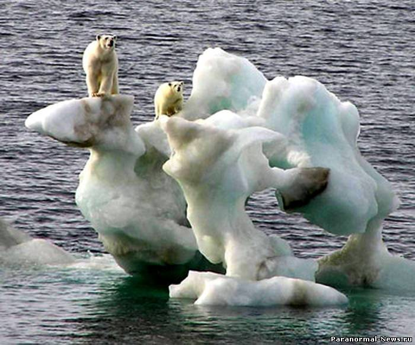
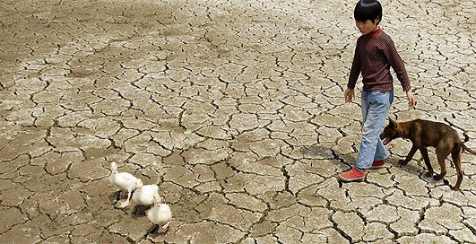

Küresel Isınmanın Etkileri
Küresel ısınma en büyük etkisini 21. yüzyılda gösterecek. Dünyanın her yerinde küresel ısınmanın etkileri üzerine görüşmeler yapılıyor. Yıkıcı etkilerinin nasıl yavaşlatılabileceği konusunda araştırmalar yapılıyor.
Küresel ısınmayla birlikte deniz seviyeleri yükselecek.10 yıl kadar sonra geri dönüş mümkün olmayabilir. Sera etkisiyle de gezegenimiz günden güne yok oluyor. Gezegenimizin çevresini saran bir kalkan var. Bu kalkan Nitrojen ve Oksijenden oluşuyor. Küresel ısınma Bu kalkan CO2 ( Karbondioksit) ve CH4 ( metan gazı) sebebiyle zarar görüyor.
Leeds Üniversitesi öğretim üyesi Profesör Chris Thomas tarafından Nature dergisinde yayınlanan bir yazıda “küresel ısınma 2050’ye kadar bitki ve hayvan türlerinin dörtte birini ya da 1 milyondan fazlasını yok edecek” denmektedir. Otomobiller ve fabrikaların gaz yayılımında en büyük etkenler olduğunu vurgulayan Thomas, yayılan gazların, 21. yüzyılın son yıllarına doğru ortalama sıcaklıkları tarihte görülmemiş düzeylere yükselteceğini belirtmekte. Ve eğer bir çözüm üretilmezse, türlerin kitlesel tükenişlerinin tarihte görülmemiş boyutlara ulaşabileceğine dikkat çekmekte.
Yerkürede 1992 verilerine göre 12,5 milyon tür yaşamaktadır. Bu türlerin insan marifetiyle yok olma hızları doğal yok olma hızlarının 100 ila 1000 katı olarak tahmin edilmektedir, bu eğilim devam ederse 50 ilâ 100 yıl içerisinde mevcut türlerin -50’sinin yok olacağı hesaplanmaktadır. Bugün doğadaki kuş türlerinin yaklaşık ’i –ki bu 1000 türe karşılık geliyor– tükenme tehdidi ile karşı karşıya bulunmaktadır. Doğadaki besin zincirinin bir kez kırılması inanılmaz sonuçlara yol açacağından canlı türlerinin bazılarının ortadan kalkması, diğer canlı türlerini de doğrudan etkileyecektir.
Dünya besin üretimi giderek sınırlı sayıda bitki türü ve çeşidine bağımlı hale gelmektedir. Balık stoklarının G’si tamamen tüketilmiştir; ’i aşırı tüketildiği için yok olmaktadır, ’u ise aşırı tüketildiği için verimliliğini yitirmiştir. Okyanuslarda birikmiş olan karbon miktarları yüzünden okyanusların asitliği artmıştır. Bu, balıkların yaşamını doğrudan etkileyecek bir durumdur. Hepsi birer karbon emme makinesi olan mercanların yavaş yavaş ortadan kalktığı görülüyor. Böyle bir durum doğadaki karbon zincirinin kırılmasına ve buna bağlı olarak karbondioksit emisyon miktarlarının inanılmaz boyutlarda artmasına sebep olabilir.
Yapılan araştırmalara göre, dünya yüzeyinin ortalama sıcaklığı 20. yüzyıl boyunca 0,6 ºC kadar artmış, son kırk yıldır atmosferin 8 kilometrelik alt kısmında sıcaklıklar yükselmiş, kar örtüsü ve buzlanma ise civarında azalmıştır.
Bilim adamlarının yaptığı araştırmalara göre, 11 bin 700 yıl önce Afrika’yı etkisi altına alan hava dalgasıyla oluşan Kilimanjaro buzulu erimeye başladı. Science dergisinde yayımlanan araştırmada, “uydu verilerine bakılırsa, 2020 yılında Kilimanjaro’nun beyaz şapkası yok olacak” deniliyor. Yok olacağından söz edilen Kilimanjaro’nun tepesinde bulunan buz tabakası, şu anda bile susuzluk çeken Tanzanya’nın nehirlerini besleyen ana kaynak. 2025 yılı itibariyle dünya nüfusunun neredeyse yarısının su kıtlığıyla karşı karşıya kalacağı tahmin edilmektedir.